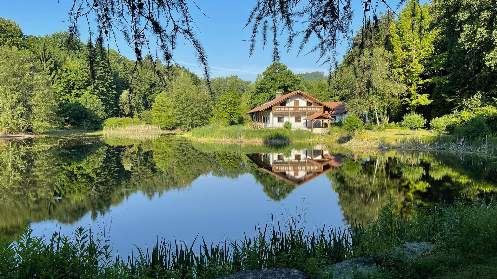
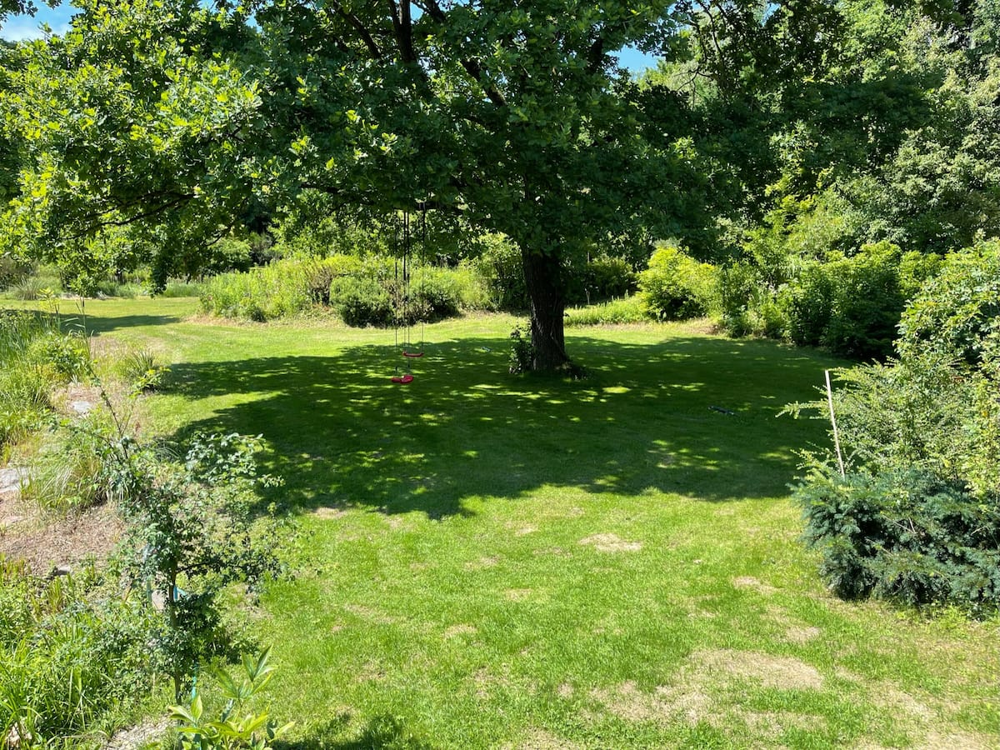

TEICHHOF · EIN PRIVATES HAUS AM WASSER
Ein Ort.
Ganz bei euch.
Ein privater Teich. Ein Haus am Wald.
Ein Ort, der nur euch gehört.
STEINPARZ, NIEDERÖSTERREICHAnkommen & durchatmen ↓
Manchmal braucht es nur einen Ort,
um wieder ganz da zu sein.
WILLKOMMEN AM TEICHHOF
Weit weg vom Müssen.
Ganz nah beieinander.
Morgens das Wasser beobachten, bis der Kaffee kalt wird. Gemeinsam kochen, lange erzählen. Und irgendwann feststellen, dass heute niemand auf die Uhr gesehen hat.
Der Teichhof in Steinparz ist euer privater Rückzugsort zwischen Wald und Wasser. Für ein Wiedersehen mit der ganzen Familie. Für einen besonderen Anlass im kleinen Kreis. Oder einfach für die seltene Freude, ungestört zu sein.
Ein erster Blick ins Grüne ↘01 / DIE NATUR GIBT DEN TAKT VOR
Nur noch
dieser Moment.
Ein paar Ruderschläge hinaus auf den Teich.
Die Welt vom Wasser aus betrachten.
Und einfach eine Weile nichts vorhaben.

KEIN TERMIN. KEIN MÜSSEN.
Einfach
hier sein.
DIE SCHÖNSTEN BEGEGNUNGEN SIND UNGEPLANT
Hier seid ihr zu Gast.
Mitten im Leben.
Rehe am Waldrand, Fische unter der Wasseroberfläche, Vögel in den Bäumen. Auch Biber und Hasen gehören zur Natur rund um den Teichhof. Manchmal lässt sich sogar ein Otter blicken.
Ein stiller Platz, ein bisschen Geduld. Viel mehr braucht es hier nicht, um etwas zu entdecken.
Wildtiere leben in ihrem eigenen Rhythmus. Jede Begegnung ist ein Geschenk.02 / ZEIT FÜR DIE MENSCHEN, DIE ZÄHLEN
Die ganze Familie.
Ein gemeinsamer Ort.
Ein Geburtstag. Ein Wiedersehen. Drei Generationen an einem Tisch. Es sind diese Tage, die bleiben: gemeinsam etwas Gutes kochen, draußen sein, den Kindern beim Entdecken zusehen.
Und wenn aus dem Nachmittag ein langer Abend wird, muss niemand mehr nach Hause fahren.
Eure gemeinsame Auszeit planen ↗

03 / EUER ZUHAUSE AUF ZEIT
Raum zum Teilen.
Raum für euch.
Warme Holzböden, liebevolle Details und die Natur vor dem Fenster. Der Charme des Hauses trifft auf modernen Komfort. Und nach einem gemeinsamen Tag findet jeder seinen eigenen Rückzugsort.
Das gesamte Haus für euch. Die buchbare Gästezahl und alle Details findet ihr auf Airbnb.
EIN GEFÜHL FÜR DEN ORT
Augenblicke vom Teichhof.
Drinnen gemütlich. Draußen Natur.
Entdeckt euren Lieblingsplatz.
Ein Rundgang in sechs Bildern

NICHT NUR EIN ORT FÜR DEN SOMMER
Draußen wird es still.
Drinnen wird es Zeit.
Für lange Gespräche. Für ein gutes Buch.
Für Tage, die keinen Plan brauchen.
WAS BLEIBT, ERZÄHLEN UNSERE GÄSTE
Erinnerungen,
die mit nach Hause reisen.
Es war genau die richtige Wahl für einen Monat Sommerfrische.
Der Teich ist riesig
Lara berichtet von fünf Tagen mit Freunden und einem Garten, der allein schon einen ganzen Tag voller Entdeckungen bot.
wundervolles Wochenende
Anja Teresa war mit Großeltern, Kindern und Enkeln zu Gast und erzählt von gemeinsamer Zeit im Haus, Garten und am Teich.
Kurze Auszüge aus Airbnb-Bewertungen; ergänzende Beschreibungen sinngemäß zusammengefasst.
EURE NÄCHSTE GEMEINSAME ERINNERUNG
Euer nächster Lieblingsort
wartet schon.
Für die nächste Familienrunde. Für ein paar Tage Stille.
Findet eure Zeit am Teichhof.